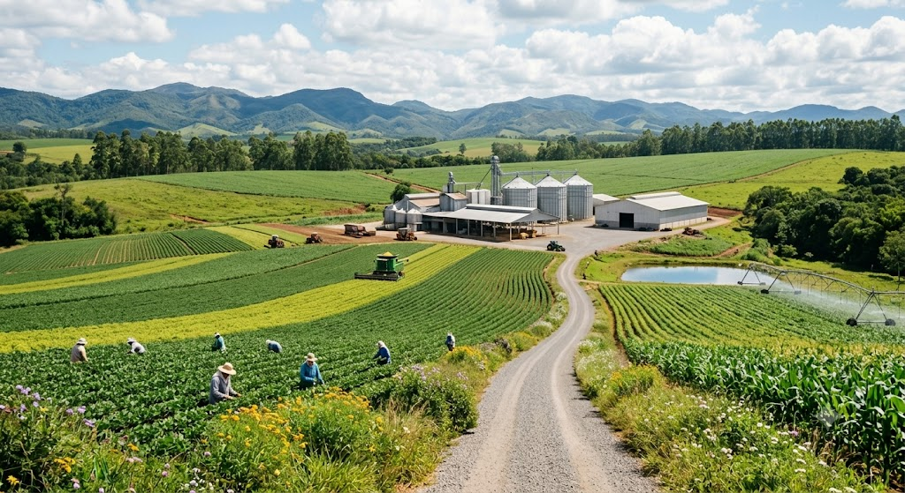

Nossa Escola
Os antecedentes históricos do Colégio Estadual Edite Cordeiro Marques – Ensino de 1º e 2º Graus iniciam-se aproximadamente em 1932, com a classe de alfabetização na casa particular de Frida Rickli Naiverth. Em 26/05/71, através do Decreto nº 408, criou-se o Grupo Escolar do Distrito de Turvo.
Endereço:

Nossa Escola
Os antecedentes históricos do Colégio Estadual Edite Cordeiro Marques – Ensino de 1º e 2º Graus iniciam-se aproximadamente em 1932, com a classe de alfabetização na casa particular de Frida Rickli Naiverth. Em 26/05/71, através do Decreto nº 408, criou-se o Grupo Escolar do Distrito de Turvo.
Endereço:
Tecnologia no Campo
A agricultura moderna une tecnologia de ponta e preservação ambiental. O uso de monitoramento por satélite e drones permite otimizar recursos, reduzir o desperdício de água e defensivos, garantindo uma produção forte e ecologicamente correta.